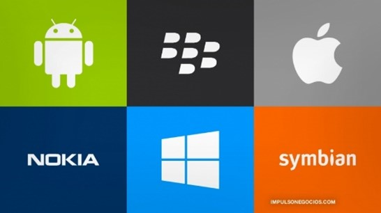
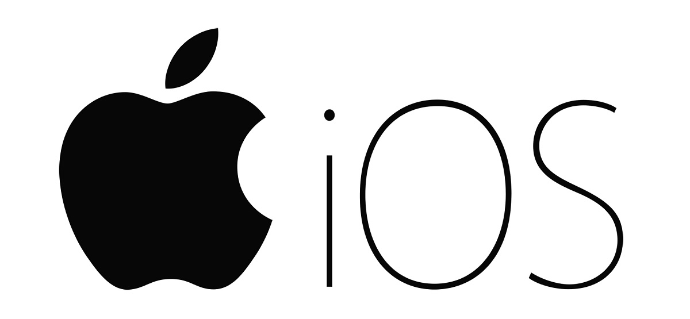
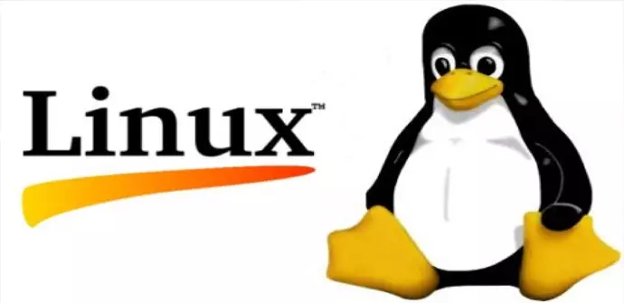

Cuadro comparativo entre sistemas operativos
Windows |
Android |
MS-DOS |
Unix |
MacOS |
Linux |
|---|---|---|---|---|---|
| Sencillo, rápido y atractivo. | Se utiliza en los dispositivos móviles inteligentes. | Sistema operativo no gráfico. | Sistema operativo multiusuario. | Exclusivo para computadoras de Apple. | Es un sistema operativo libre: gratuito y modificable. |
| Ejecución de programas fácil. | Es de código abierto, multitarea. | Se fue actualizando con el paso de los años. | Facilidad de crear programas y sistemas. | Rendimiento de terminales es superior. | Tiene como base de sistema a UNIX. |
| Interfaz gráfica. | Su interfaz es lo que se ve en la pantalla. | Interfaz de línea de comandos. | Se maneja por interfaz de comandos. | Mejor interfaz gráfica del mercado. | Interfaz de comandos sencilla. |
| Incluye Internet Explorer y cuenta con Microsoft Office. | Navegador basado en WebKit incluido. | Permite un usuario y una sola tarea. | Lenguaje de comandos: Shell. | Safari es su propio navegador web. | Cuenta con su programa Libre Office. |
| Requerimientos del sistema son mínimos. | Las apps pueden ser reemplazadas. | Requerimientos del sistema mínimos. | Fácil adaptación según requerimientos. | Poco software para este SO. | Estructura basada en un micronúcleo híbrido. |
| Programas y apps que facilitan su uso. | Actualizaciones desde su liberación inicial. | Tuvo ocho versiones principales. | Diversas variantes y se considera potente. | Versiones variables al año de creación. | Tiene algunas variantes (distribuciones). |
Componentes del sistema operativo y funciones
Los diferentes elementos del sistema operativo están estrechamente relacionados. Las partes de un sistema operativo comprende un conjunto de acciones que se llevan a cabo en una computadora. Los componentes del sistema operativo de los que estaremos hablando son:
- Los procesos: Cuando se habla de un proceso se hace referencia a un programa en ejecución. Un proceso es un conjunto de instrucciones que corresponden a un programa y que son ejecutadas por la CPU. En un programa se pueden ejecutar uno o varios procesos diferentes.
- La memoria principal: es un recurso muy importante que se ha de gestionar cuidadosamente para agilizar la ejecución de los procesos. Ante un fallo de energía eléctrica, como la memoria principal es volátil se pierde su contenido.
- El almacenamiento secundario: representa otro de los componentes de un sistema operativo y no es más que un espacio reservado en los discos con el objetivo de almacenar los programas que no necesitan estar en la memoria principal y para el intercambio de losprogramas desde y hacia la memoria principal.
- El sistema de entrada/salida: representa el intercambio de información entre el procesador y los dispositivos periféricos (teclado, mouse, pantalla, impresora y otros). Los dispositivos periféricos solicitan recursos del sistema por medio de interrupciones.
- El sistema de archivos: Los archivos representan un conjunto de información almacenada en los discos de una PC. Dicha información se almacena de forma relacionada y organizada. Los archivos almacenan tanto los programas como los datos.
- Los sistemas de protección: es uno de los componentes del sistema operativo que proporciona el mecanismo que controla el acceso de los programas o los usuarios a los recursos del sistema. El sistema operativo se encarga de distinguir entre uso autorizado y no autorizado, especificar los controles de seguridad a realizar y forzar el uso de los mecanismos de protección.
- El sistema de comunicaciones: permite el intercambio de información entre procesos y programas que se ejecutan localmente con procesos y programas que se ejecutan de forma remota.
- Los programas del sistema: Son aplicaciones que se instalan con el sistema operativo pero que no forman parte de él. Los programas del sistema son útiles para el desarrollo y ejecución de los programas de usuario.
- El gestor de recursos: El sistema operativo administra la unidad central de procesamiento, los dispositivos de entrada y salida, la memoria principal o memoria RAM, los discos o memoria virtual, los procesos o programas en ejecución y en general todos los recursos del sistema.
Clasificación de los sistemas por el número de usuarios
Monousuario: Soportan un solo usuario.
Multiusuario: Servicio a múltiples usuarios al mismo tiempo.
Glosario de terminología
- Archivo: Son documentos computacionales que contienen información como texto, imágenes, sonidos, vídeos, etc.
- Base de datos: Estructura de Software que colecciona información muy variada de diferentes personas y cosas, cada una de la cuales tiene algo en común.
- Bit: Es la sigla del inglés Binary Digit (dígito binario) y representa la unidad mínima de información posible, ya que equivale a un golpe de corriente con un valor que puede ser uno (que equivale a encendido) o bien cero (apagado).
- Browser: Es un programa que se usa para navegar por el web, es algo así como un paginado que permite pasar páginas.
- Buffer: Es un espacio de memoria que se utiliza como regulador y sistema de almacenamiento de intermedio entre dispositivos de un sistema informático.
- Byte: Es una unidad de información a 8 bits, un carácter que puede ser un número, símbolo o una letra.
- Compatibilidad: Es la habilidad de usar sistemas y dispositivos de una computadora en otra, sin requerir cambios.
- Compilador: Es un programa traductor que genera lenguaje de maquina a partir de un lenguaje de programación de alto nivel basado en el lenguaje humano.
- Computador análogo: Es un computador que trabaja con señales visuales o acústicas que se convierten en una tensión eléctrica variable, que se puede reproducir directamente a través de altavoces o almacenar en una cinta o disco.
- Computador digital: Es un ordenador que se utiliza, contiene y manipula información convertida al código binario, el lenguaje de números o lenguaje de máquina que emplean los ordenadores para almacenar y manipular los datos.
- Computador: Es un dispositivo electrónico capaz de recibir un conjunto de instrucciones y ejecutarlas utilizando cálculos sobre los datos numéricos o bien compilando y correlacionando otros tipos de información.
- Download: Es la operación de bajar o descargar desde un sitio web (ordenador remoto) determinada información hasta nuestro PC.
- Ensamblador: Es un lenguaje de programación de medio nivel, el cual es traducible directamente a lenguaje de máquina.
- Escáner: Es un periférico de entrada de datos (texto impreso o imágenes), su función es capturar estos datos y transmitirlos al ordenador para su posterior manipulación.
- Graficado: Es un programa que permite crear y manipular imágenes de ilustraciones en el computador.
- Hardware: Son todos aquellos componentes físicos de una computadora, todo lo visible y tangible.
- Impresora: Es un periférico del ordenador diseñado para copiar en un soporte duro (papel, acetato, etc.), texto e imágenes en color blanco o negro.
- Informática: Es la ciencia del tratamiento automático y racional de la información, considerada como soporte de los conocimientos y comunicaciones, a través de los ordenadores.
- Interfaz: Es la conexión entre dos componentes de Hardware, entre dos aplicaciones o entre un usuario y una aplicación.
- Internet: Es una red informática a nivel mundial que utiliza la línea telefónica para transmitir la información.
- Java:E s un lenguaje desarrollado por Sun Microsystemas para la elaboración de aplicaciones exportables a la red y capaces de operar sobre cualquier plataforma a través, normalmente, de visualizadores www.
- Lenguaje de Programación: Es un conjunto de sentencias utilizadas para escribir secuencias de instrucciones para ser ejecutadas e una computadora.
- Lenguaje maquina: Son aquellas que basadas en secuencia de ceros y unos (código binario), son entendibles directamente por el ordenador y por lo tanto ejecutables sin necesidad de traducción.
- Linux: Es un Sistema Operativo que actúa como servicio de información entre el Hardware y el Software.
- Mac OS: Es el nombre del Sistema Operativo creado por Apple para su línea de computadoras Macintosh.
- Máquina virtual: Se trata de un tipo de Sistema Operativo que presentan una interfaz a cada proceso, mostrando una máquina que aparece idéntica a la maquina real subyacente.
- Memoria RAM: Es un dispositivo donde se guardan datos en forma temporal.
- Microsoft Windows: Es el nombre de una familia de Sistemas Operativos desarrollados por Microsoft desde 1981.
- Módem: Es un aparato que conecta al computador con la línea telefónica.
- Mouse: Es un pequeño dispositivo de entrada con uno o más botones incorporados, que se utilizan con las interfaces gráficas del usuario.
- Multiprogramación: Es la capacidad de correr (ejecutar) más de un programa de manera simultánea.
- Operador: En programación se llaman operadores a todos los símbolos, esto es, que no son números ni letras.
- Operadores aritméticos: En programación son todos los símbolos que se utilizan en matemática.
- Operadores de comparación: Son símbolos que se usan para comparar valores de variables en programación.
- Página web: Es un documento dentro de un sitio de internet que contiene información.
- Procesador de texto: Es un programa que permite la manipulación de texto con formato y que permite generar archivos que conserva el estilo realizado.
- Proceso: Es una operación o conjunto combinado de operaciones con datos, o bien una secuencia de acontecimientos definida, única y delimitada.
- Programa: Es un conjunto de instrucciones ordenados correctamente que permiten realizar una tarea o trabajo específico.
- Red: Es un conjunto de computadores que están unidos entre si, a través de elementos de comunicaciones, pueden ser permanentes, o bien temporales, como enlaces telefónicos.
- Sistema: Es cualquier conjunto de dispositivos que colaboran en la realización de una tarea.
- Sistemas Operativos: Es un conjunto de programas que controlan los procesos básicos de una computadora y permiten el funcionamiento de otros programas.
- Software de Sistemas: Es aquel que está orientado a la manipulación y control directo del Hardware mediante una serie de rutinas especializadas.
- Software Libre: Es la denominación del Software que respeta la libertad de todos los usuarios que adquirieron el producto y, por tanto, una vez obtenido el mismo puede ser usado, copiado, estudiado, modificado y distribuido libremente de varias formas.
- Software: Son todos los programas y aplicaciones que están guardadas en un disco duro, CD-ROM o disquetes.
- Solaris: Es un Sistema Operativo de tipo Unix desarrollado por Sun Microsyistemas desde 1992 como sucesor de SunOs.
- Traductor: Es un programa que convierte mediante una traducción un lenguaje fuente a un lenguaje objeto, sin que por ello varíe la semántica del código traducido, ya que tan solo cambia su representación.
- Unix: Es una familia de Sistemas Operativos tanto para ordenadores personales (PC) como para mainframes (grandes ordenadores de muchos procesadores).
- Windows 98: Es un Sistema Operativo lanzado por Microsoft en 1998, como sucesor de Windows 95.
Partes de un sistema operativo
Un software que constituye una parte fundamental del sistema. Podríamos decir que
es el corazón del propio sistema, y de ahí su nombre. Se define como la parte que se ejecuta en modo
privilegiado o modo núcleo y que es el principal responsable a la hora de arrancar el propio sistema,
proporcionar un control de nivel básico sobre todos los componentes hardware del ordenador y cuyas funciones
principales son leer y escribir datos en memoria, procesar órdenes, interpretar datos, decidir qué programar
podrá hacer uso de un determinado recurso y durante cuánto tiempo, etc.
Software encargado de permitir que el sistema interactúe con cualquier periférico.
Aunque no siempre es necesario para el uso de un nuevo hardware, su uso es recomendado para evitar
problemas, mejorar la seguridad y la experiencia de usuario.
Es la parte que permite al usuario interaccionar con el ordenador. Esta interfaz
puede ser gráfica, proporcionando un escritorio, ventanas y componentes gráficos para una interacción más
intuitiva, o bien puede ser a través de una línea de comandos.
Partes de gestión de un sistema operativo
| Gestión de Proceso | Un proceso es simplemente, un programa en ejecución que necesita recursos para realizar su tarea: tiempo de CPU, memoria, archivos y dispositivos de E/S. |
|---|---|
| Gestión de Memoria Principal | La memoria es una gran tabla de palabras o bytes que se referencia cada una mediante una dirección única. |
| Gestión de almacenamiento secundario | Un sistema de almacenamiento secundario es necesario, ya que la memoria principal es volátil y además muy pequeña para almacenar todos los programas y datos. También es necesario mantener los datos que no convenga mantener en la memoria principal. |
| El sistema de Entrada/Salida | Consiste en un sistema de almacenamiento temporal (caché), una interfaz de manejadores de dispositivos y otra para dispositivos concretos. El sistema operativo debe gestionar el almacenamiento temporal de E/S y servir las interrupciones de los dispositivos de E/S. |
| Sistema de archivos | Los archivos son colecciones de información relacionada, definidas por sus creadores. Éstos almacenan programas y datos tales como imágenes, textos, información de bases de datos, etc. |
Sistemas operativos para ordenadores y dispositivos móviles y sus principales características
Ordenadores
- Windows.- Su sistema de seguridad es de última generación, su interfaz de usuario permite un uso conveniente independientemente del dispositivo en el que lo estés utilizando.
- Ubuntu.- Su función de código abierto es lo suficientemente atractiva como para atraer a muchos usuarios. Pero también compensa la calidad al proporcionar una interfaz robusta y características de seguridad que son demasiado difíciles de transmitir.
- OS.- El mayor logro de Mac es lo dinámico que parecen en el aspecto y el diseño de su interfaz.
- Solaris.- Permite la escalabilidad, la interoperabilidad, la gestión de datos y la seguridad que son fundamentales para las empresas que necesitan software operativo de alta gama.

Dispositivos móviles
- Symbian OS.- De código abierto, en 2010 vuelve a Nokia.
- Windows Mobile/Phone.- Específico para smartphones y basado en Windows CE 5.2.
- iOS.- Construido para iPhone, soporta 3 funcionalidades teléfono con cámara, iPod e internet.
- Android.- Sistema operativo (basado en Linux), entorno de ejecución basado en Java, librerías de bajo y medio nivel.
- Linux en dispositivos móviles.- Código abierto y gratuito; escalable, fiable, robusto y seguro, adaptable a múltiples arquitecturas, requisitos hardware reducidos.
Categorías de los sistemas operativos y su clasificación
Sistemas Operativos por su Estructura
Está compuesto por una serie de componentes con funciones bien definidas.
Sistemas Operativos por sus Servicios
Cliente Servidor: Sistema operativo reciente que puede ser ejecutado en la mayoría de las
computadoras. Su objetivo es establecer la comunicación entre los clientes y servidores.
Sistemas Operativos por su Forma de Procesamiento
Secuencia por Lotes: Es la ejecución de una lista de comandos del sistema operativo uno tras otro sin
intervención del usuario.
Tiempo Real: Procesa las instrucciones recibidas al instante, y una vez que han sido procesadas
muestra el resultado.
Investigación donde funciones principales de sistemas operativos actuales
Actualmente, contamos con diversos sistemas operativos, cumplen la misma función la cual es ejecutarnos alguna tarea según nuestros requerimientos, pero con distintas maneras de hacerlo.
Primeramente, tenemos el sistema operativo más popular, el cual es Windows. Sus funciones principales
son que nos permite correr y ejecutar diversos programas, han mejorado el software lo cual lo hace más
flexible y abierto, también han añadido mejor soporte para diversas acciones cómo por ejemplo abrir algún
archivo.
alguna tarea según nuestros requerimientos, pero con distintas maneras de hacerlo.
Primeramente, tenemos el sistema operativo más popular, el cual es Windows. Sus funciones principales
son que nos permite correr y ejecutar diversos programas, han mejorado el software lo cual lo hace más
flexible y abierto, también han añadido mejor soporte para diversas acciones cómo por ejemplo abrir algún
archivo.
Otro de los mejores sistemas operativos en el mundo es el iOS, el cual es para celulares inteligentes marca Apple.
Una de sus funciones es primeramente la compatibilidad con todas las versiones de dispositivos móviles, posteriormente otra función es la realidad aumentada esto es que múltiples dispositivos visualicen los mismos elementos en tres dimensiones desde diferentes perspectivas a través de la cámara. Una más de sus funciones es la aplicación de fotos, que esta es capaz de distinguir entre las imágenes como deportes, viajes, comida, etc. Siendo de esta manera una de las mejores cámaras en los dispositivos móviles del mercado. También cuenta con la función de su asistente virtual, llamada Siri, y con ella se les permite a los usuarios realizar acciones muy específicas dentro de aplicaciones de terceros. Otra función que tiene este sistema operativo, que se considera importante, ya que tiene que ver con la salud, es una aplicación que se llama “Tiempo en pantalla”, y fue diseñada para reducir la adicción al teléfono móvil.
Otro ejemplo de un sistema operativo actual es Linux,el cual es un software libre, y es el que capacita a las aplicaciones y al operador del ordenador para acceder a los dispositivos y poder ejecutar las funciones deseadas. Una de las funciones que tiene Linux es la capacidad de poder ejecutar varios programas a la vez, también cuenta con sistema multiusuario lo cual significa que permite tener varios usuarios a la vez que accedan a aplicaciones y recursos del sistema. Linux es el sistema más flexible y por lo tanto más eficiente al navegar.
 Android es otro sistema operativo
móvil y muy usado actualmente, fue desarrollado por Google, basado en Linux y es de código abierto.
También cuenta con sus propias funciones, por ejemplo, que le permite a sus usuarios establecer más sus
gustos con los widgets.
Una función más con la que cuenta este sistema operativo es que se pueden pasar aplicaciones a la tarjeta
microSD y así liberar más almacenamiento. De igual manera, una función muy interesante es que se pueden
grabar las llamadas.
Android es otro sistema operativo
móvil y muy usado actualmente, fue desarrollado por Google, basado en Linux y es de código abierto.
También cuenta con sus propias funciones, por ejemplo, que le permite a sus usuarios establecer más sus
gustos con los widgets.
Una función más con la que cuenta este sistema operativo es que se pueden pasar aplicaciones a la tarjeta
microSD y así liberar más almacenamiento. De igual manera, una función muy interesante es que se pueden
grabar las llamadas.
Conclusión general
Nos queda claro que existen diversos sistemas operativos para cada uno de nuestros dispositivos móviles o fijos, ésto debido a las diferentes necesidades de las personas y sus respectivos puntos de vista. Es muy probable que los requerimientos, costos y habilidades de algún sistema operativo se adapten a tus deseos o tus posibilidades económicas.
Se asume que un Sistema Operativo no es más que una herramienta la cual es sumamente útil para nuestro día a día, también se sabe que la tecnología avanza a pasos agigantados y nosotros los humanos no nos podemos quedar atrás.
Todas las personas en éste mundo hemos estado cerca de un Sistema Operativo aunque sea de manera indirecta, a continuación se enlistan los más comunes en su versión para móviles:
- Blackberry
- Nokia
- Android
- iOS